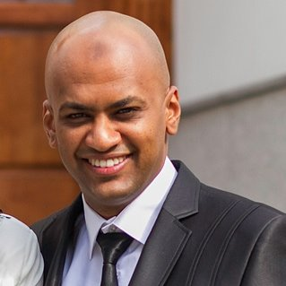

In my early days, at the beginning of 2003, after obtaining my BS in Computer Science I worked as a Freelance desktop applications Developer for about 3-4 years. My tools of development were Delphi (object Pascal) for a programming language and Interbase as a relational database system. I developed customized inventory and sales applications for private retailers using Delphi IDE and IBconsle (Interbase Management System). Following to endeavor of working as applications developer I was able to obtain a government sponsored scholarship from the Ministry of Higher Education in Libya. This opportunity allowed me to come to the US and obtain a master degree in Computer Science. Following my passion of learning more about computers lead me to pursue a passion in Web development which led me to General Assembly. Now on the road to fulfilling this passion I aspire to become a full-stack web developer with focus on JavaScript and it's libraries and frameworks
